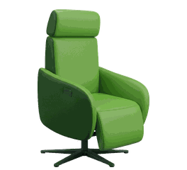

Geertjan, we doen iets bijzonders:
WE GENEREREN ÉCHT VERKEER!
In 60 seconden helder in beeld: 10.967 vertoningen, 112 kliks (€ 0,14), 237 GA4-sessies én de Fruitmachine (76x ROI op 1 stoel)!
Loop samen door de cijfers in de interactieve wizard of bekijk het 7-dagen dagboek hieronder.
Naar de Interactieve Wizard →Van Stilstand naar 10.967 Vertoningen & 112 Kliks
Kijk hoe de advertentiemotor dag voor dag opbouwt zodra we stoppen met TPM en overstappen op gerichte zoekintentie in de Drechtsteden.
De live status via Marktplaats Zakelijk en Google: 10.967 gerichte stoelzoekers bereikt, 112 kliks naar Schipper Wonen en 5 directe websitebezoeken. Slechts 1 verkochte stoel dekt de inleg 76 keer terug!

De Geschiedenis van de Afgelopen 7 Dagen
Klik op een dag of gebruik de autoplay-knop om de dagelijkse groei van Google Search en Marktplaats Zakelijk te herbeleven.